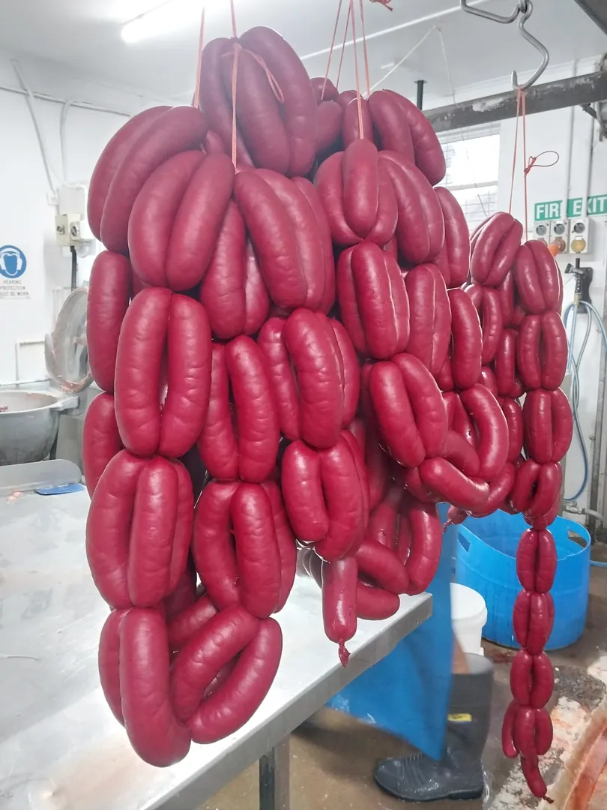
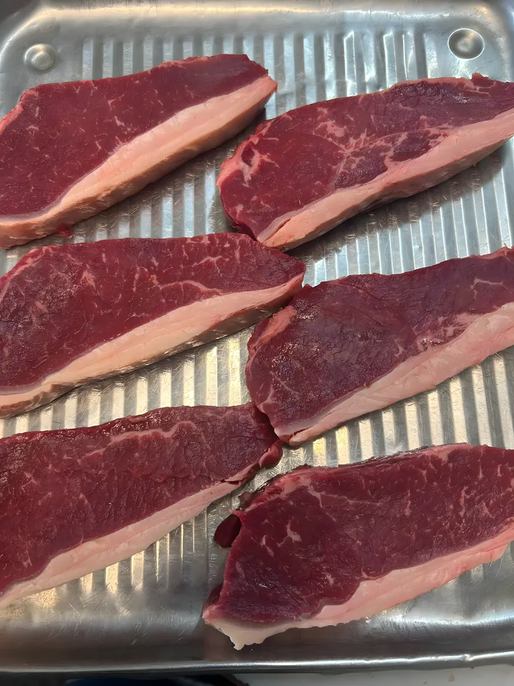
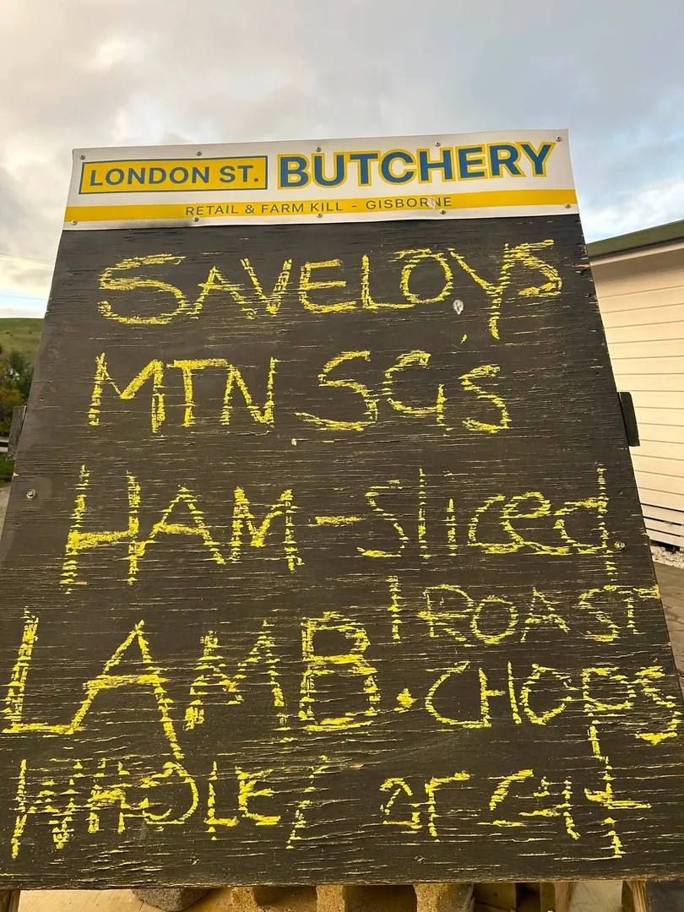
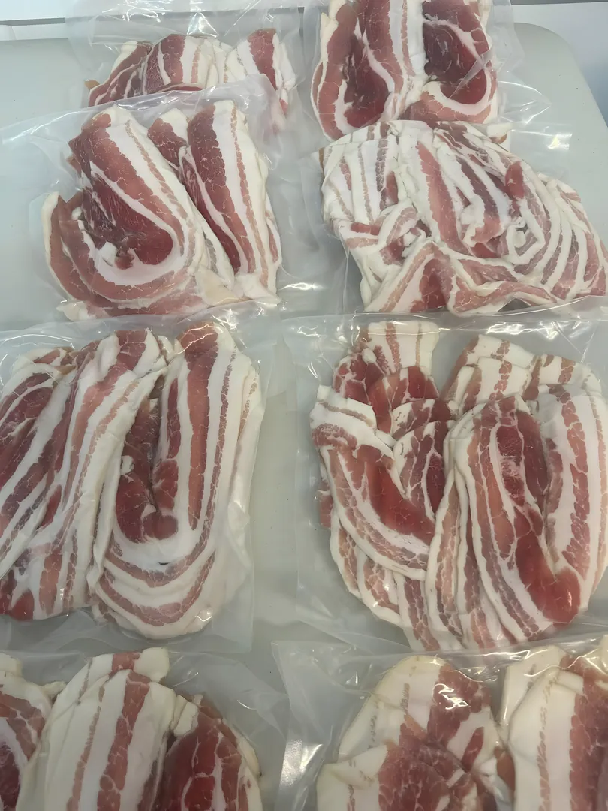
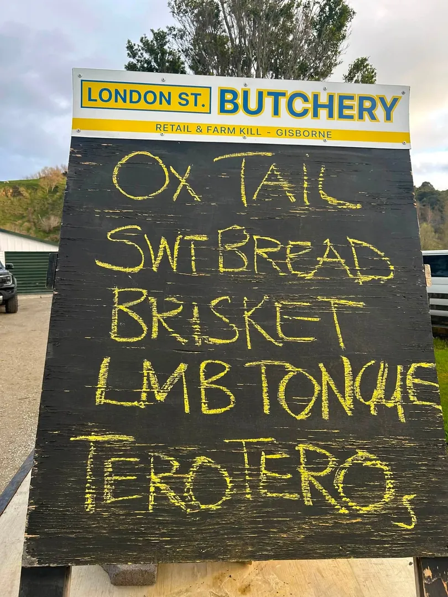
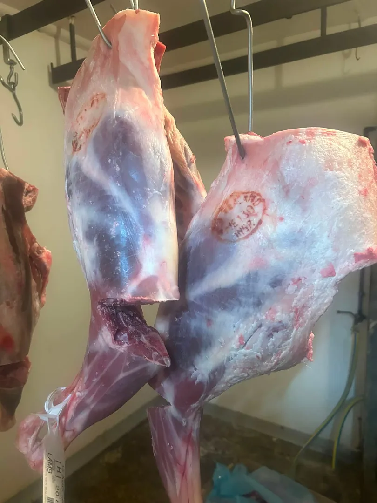

Savs and sausages
Our savs and saussies are hand made by the butchery team to the shop's 40-year-old recipes. If you only try one thing, make it the savs.
Butcher · Retail & home kill · Kaiti, Gisborne
Savs and sausages made by hand to a 40-year-old recipe, and a home kill service that comes out to your farm anywhere in the Gisborne District.
Hand made by our butchers. We reckon they're world famous, and so do the locals.
Home kill anywhere in the Gisborne District, lined up with our head butcher.
Boxed, free-flowed ready for the freezer, or back in your own container.
In the cabinet
Beef, mutton and pork cut in the shop, plus the savs, sausages and luncheon we make ourselves. Specials change every week, so check the board when you come in.

Our savs and saussies are hand made by the butchery team to the shop's 40-year-old recipes. If you only try one thing, make it the savs.

Rump, porterhouse, stewing steak, mince, patties and corned silverside. Pet food too.

Chops, roasts, mutton cuts and offal, cut to order at the counter.

Ham, bacon, bacon bones and pork belly. Ask for your ham sliced.

Ox tail, sweetbreads, brisket, lamb tongues and terotero when they're in. Watch our Facebook for what's fresh.

We come out to your farm, then process, pack and label your meat to order.
How home kill worksRun a takeaway or a store? We already supply a number of local shops. Call 06 868 5928 to talk wholesale.
Home kill
We're a licensed dual operator, so as well as the shop we run a full home kill service. Our head butcher comes to you anywhere in the Gisborne District, and the meat comes back made the way you asked for it.
Call 06 868 5928 and we'll line up a day with our head butcher.
We travel to your farm anywhere in the Gisborne District.
Choose from the processing list. Sausages, savs, bacon, mince, the lot.
Boxed, free-flowed ready for the freezer, or back in the same container you gave us.
Not sure what to do with a whole beast? Ask the head butcher when you book and we'll talk you through it.
At the shop
A tray of this week's lamb chops, straight from our Facebook page. Our weekly specials and what's just come in go up there first.
More videos on FacebookAbout us
Here at London Street Butchery we make fresh, tasty products from quality meat sourced locally and from around New Zealand. Our smallgoods are hand made by an experienced and enthusiastic butchery team, using recipes that have been going for 40 years.
We're a licensed dual operator, so alongside the shop we run a full home kill service across the Gisborne District, and we supply a number of local takeaway shops and stores.
The crew
Lines up your home kill and comes out to the farm.
Cuts your meat to order and makes the savs, sausages and luncheon.
Wraps up your order and knows what's on special this week.
Experienced butcher wanted, part time or full time.
Call the shopReviews
"Travel all the way from the other side of town to come here ...meat is always lovely, clean and fresh with top service...gotta try their savs they are the best!"
"Great service love the savs and the luncheon always a good deal from there"
FAQ
Beef (rump, porterhouse, stewing steak, mince, patties and corned silverside), mutton and lamb (chops, roasts and offal), pork (ham, bacon, bacon bones and belly), pet food, and our own savs, sausages and luncheon. What's on special changes week to week, so check the board in the shop or our Facebook page.
Monday to Friday, 9am to 5pm. We're closed on Saturday and Sunday.
Yes. We travel to your farm anywhere in the Gisborne District. Ring the shop on 06 868 5928 and we'll line up a day with our head butcher.
You choose what gets made from our processing list. It can come back boxed, free-flowed ready for the freezer, or in the same container you gave us. Tell us how you want it packed when you book.
We have run a Xmas club in past years, where you put a little aside each week towards your Christmas ham, roast pork or a meat pack you design yourself. Ring the shop to check whether it's running this year.
Cash, eftpos and online payment.
Visit or call